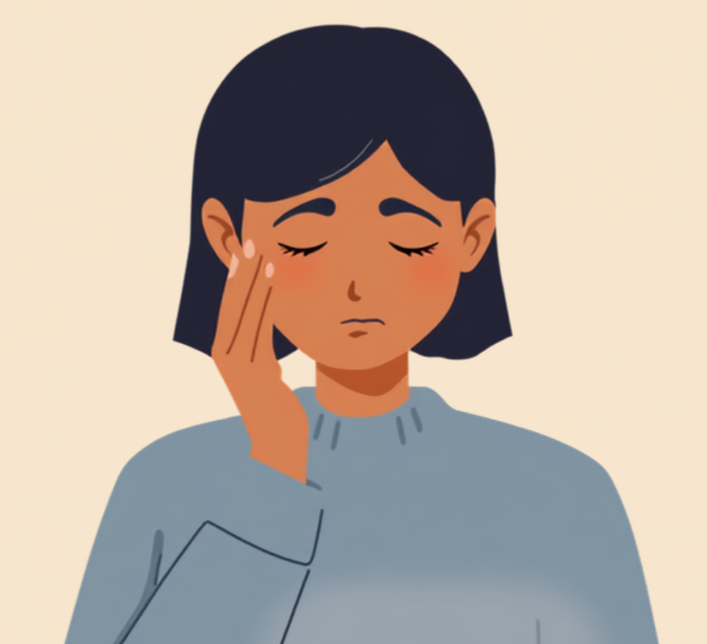
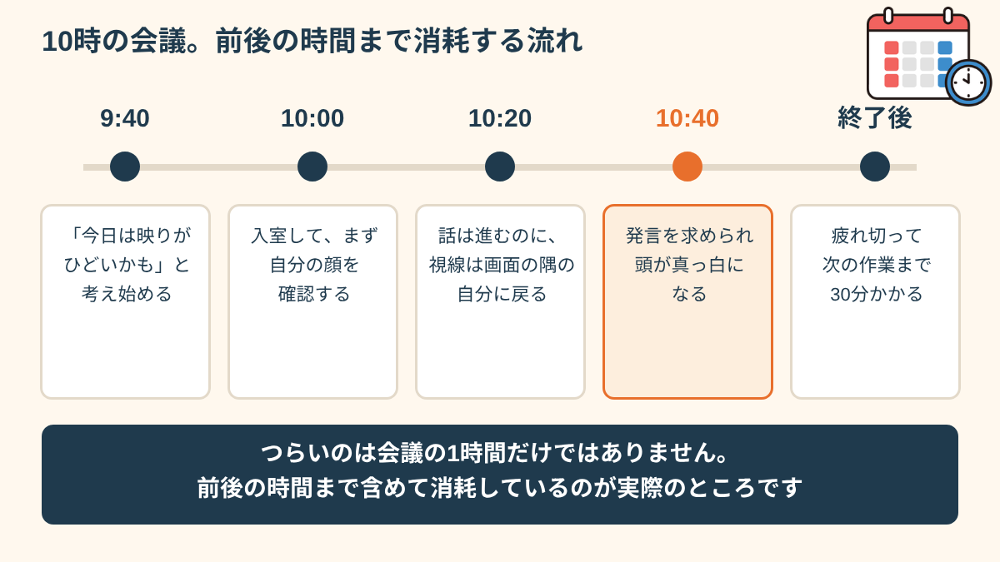
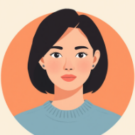
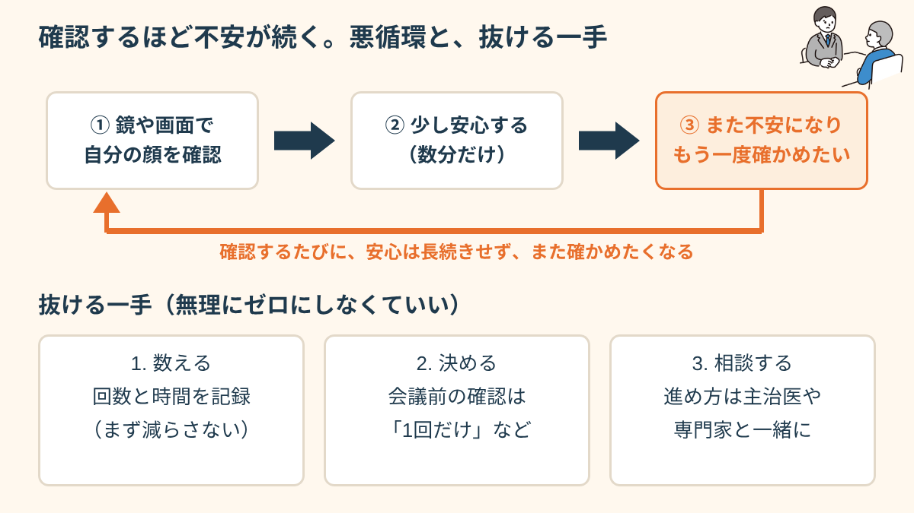
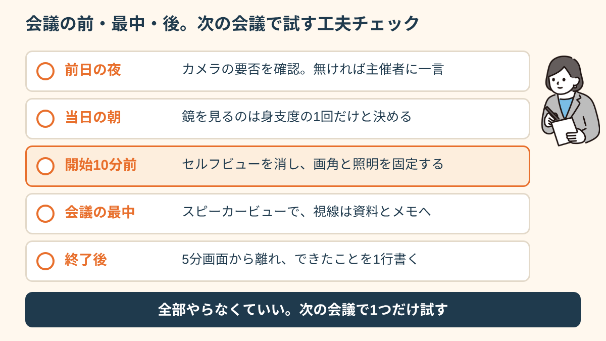
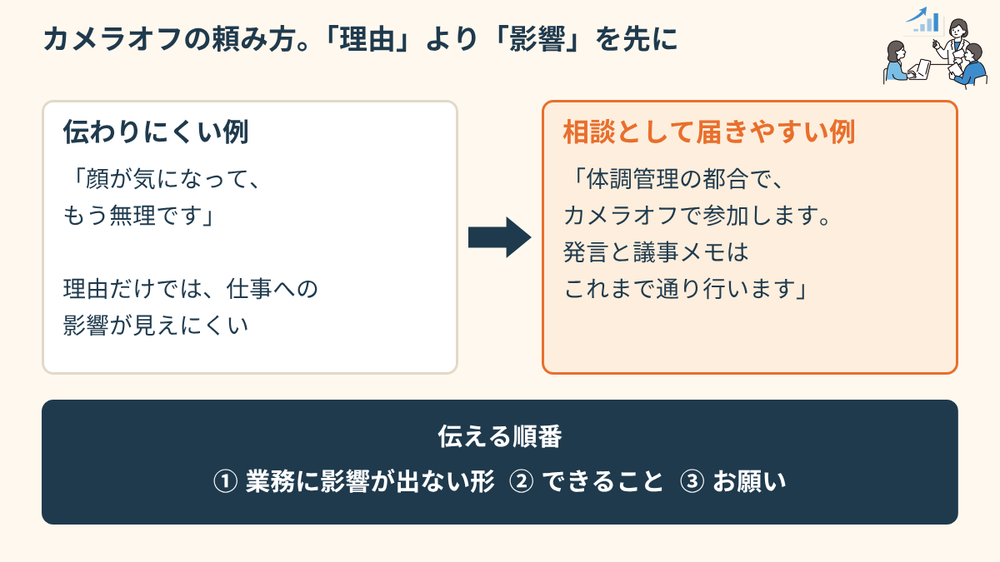
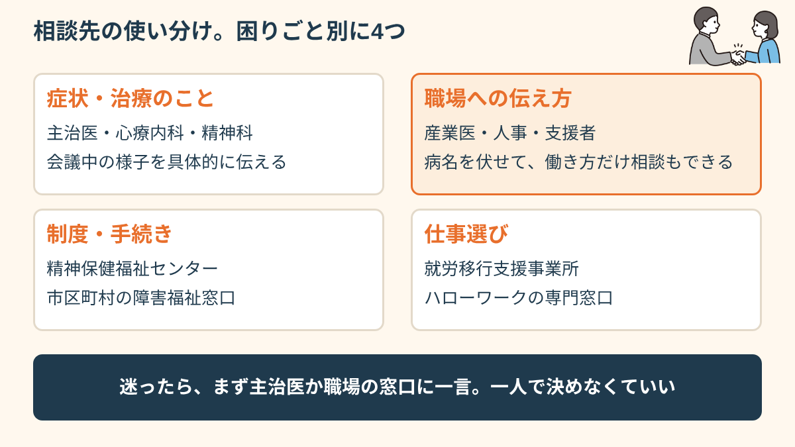

なぜオンライン会議がこんなにつらいのか
対面の会議なら、自分の顔をずっと見続けることはありません。でもオンライン会議は違います。画面の隅、あるいは大きく表示された自分の映像が、会議の間ずっと視界に入り続けます。この「自分の顔を見続ける」状態は、海外ではZoom dysmorphia（ズーム・ディスモルフィア）と呼ばれ、外見の欠点を探す意識を強めてしまうことがあると指摘されています。

普通なら気にならない程度の特徴でも、何度も見ているうちに「やっぱりここが変だ」という感覚が強くなっていくことがあります。実際にある調査では、Web会議でカメラをオフにする理由の第1位が「長時間自分の顔を見たくない」（41.1%）だったという結果も報告されています。醜形恐怖症のある方にとっては、この負担がさらに強く、会議中ずっと気が休まらない状態になりやすいと言われています。
仕事への影響は、「つらい」だけでは終わらないことがあります。会議の内容が頭に入らないので発言が減る、聞き返せずに指示を取り違える、会議の直前になると動悸や吐き気がして席を立ちたくなる、会議が連続する日は夕方に動けなくなる。こうした影響が積み重なると、「仕事ができない人だと思われているのでは」という不安が加わり、さらに画面の顔が気になる、という悪循環にもつながります。
たとえば、10時から1時間の定例会議があるとします。9時40分ごろから「今日は映りがひどいかもしれない」と考え始め、10時に入室すると、まず自分の顔を確認します。話が始まっても視線は画面の隅の自分の映像に戻り続け、発言を求められた瞬間に頭が真っ白になります。終わったあとは疲れ切って、次の作業に入るまでに30分かかる。この流れに心当たりのある方は少なくありません。会議の1時間だけでなく、前後の時間まで含めて消耗しているのが実際のところです。

「会議が1時間あったら、その1時間ずっと自分の顔の輪郭とか肌の質感を見てしまっていました。相手が話している内容はほとんど頭に入ってこなくて、終わったあとどっと疲れが出ます。周りは『真剣に聞いてるね』って思ってたみたいですが、実際は自分の顔のことしか考えていませんでした。」

一点の「欠点」に焦点が合ってしまう仕組み
醜形恐怖症の特徴の一つに、顔や体の一部分にだけ意識が極端に集中してしまうことが挙げられます。周りの人が顔全体を自然に見ているのに対して、本人の中では特定の一点だけがまるで虫眼鏡で拡大されたように大きく感じられてしまう。これは意志の弱さや自意識過剰といった話ではなく、注意の向け方の特性として起きている現象だとされています。
周りから見て「気にならない程度」でも、本人にとってはそうではない、というのがこの状態のつらいところです。「大丈夫だよ」「変じゃないよ」と言われても、「慰めてくれているだけだ」と受け取ってしまい、かえって孤立感が強まることもあります。見え方の感じ方そのものが違うので、周りが見たままを伝えても、本人の感覚とはすれ違いやすいのです。
また、体調や睡眠、疲れの度合いによって、気になり方に波が出るという声もあります。寝不足の朝や、予定が詰まった週の後半は、普段より画面の顔が気になる、という具合です。波があることを知っておくと、「今日はたまたま強く出ている日だ」と一歩引いて見られることがあります。これは診断や治療の代わりになる話ではなく、あくまで日々の工夫のヒントとして受け取ってください。
やりがちな対処が、つらさを長引かせることがある
つらい状況の中で、多くの人が無意識に自分を守る工夫をしています。ただ、その工夫の中には、短い時間は楽になっても、長い目で見るとつらさを続けさせてしまうものがあります。責める話ではなく、「自分はどのパターンに近いか」を知るためのチェックとして読んでください。
よくある3つのパターン
1つ目は、会議中に何度も自分の映像を確認するパターンです。髪や肌、輪郭を画面でチェックし、手鏡やスマホのカメラを机に置いている人もいます。確認した直後は少し安心しますが、その安心は長続きせず、数分後にまた確かめたくなります。
2つ目は、カメラを避け続けるパターンです。体調を守るためのカメラオフは、とても大切な工夫です。一方で、「次の会議も、その次も顔を見せられない」という気持ちのまま避ける範囲が広がり、会議への参加そのものや、出社の日の対面の打ち合わせにまで広がってしまうと、仕事の選択肢が狭まっていきます。
3つ目は、映りを整えることに時間とエネルギーを使い切るパターンです。会議の1時間前から準備を始め、照明や角度を何度も直し、終わったあとはぐったりして午後の仕事に響く。準備に使う時間が1日の予定を圧迫するようになっていたら、一度立ち止まる合図かもしれません。

悪循環を知ったうえでの「次の一手」
- 確認や準備の回数を、1日のうちで「何回、何分」か数えて記録する（まずは減らさず、実態を知るだけでよい）
- 会議前の確認は「入室前に1回」など、自分で決めたルールにする。守れない日があっても責めない
- カメラオフは「守る工夫」として使いつつ、「どの会議ならオンでも耐えられそうか」を1つだけ探しておく
- 主治医や心理の専門家に、「会議中にどんな行動が増えるか」を具体的に伝える（認知行動療法などの進め方を相談できます）
- 慣れる練習（少しずつカメラに映る時間を延ばすなど）は、一人で無理に進めず、専門家と一緒に段階を決める
会議の前・最中・後。1時間の会議を乗り切る手順
ここでは、「10時から1時間のオンライン会議」を例に、時間の流れに沿って今日から試せる工夫を並べます。すべてやる必要はありません。自分に合いそうなものを1つか2つ選んで、次の会議で試す、くらいの気持ちで十分です。
前日の夜〜当日の朝
前日の夜に、翌日の会議の「カメラの有無」を確認しておくと、当日の朝の不安が軽くなります。招待メールや議事の案内に書かれていなければ、主催者に「カメラは必須ですか」と一言聞くだけでも構いません。朝は、鏡やカメラを見る時間を決めておきます。「身支度のときに1回」のように決めておくと、会議の直前に何度も見直す流れを作りにくくなります。
開始10分前〜入室
入室の前に、セルフビュー（自分の映像）の非表示設定を済ませておくのがおすすめです。多くのツールでは、自分の映像を右クリックなどで非表示にできます。入室してから探すと、その間に自分の顔が目に入ってしまうので、事前に設定しておきます。画角は、顔が画面の中央に入りすぎないよう少し下げる、照明は正面からやわらかく当てる、背景はぼかすか単色にする、といった「一度決めたら触らない設定」にしておくと、会議中に直したくなる気持ちを減らせます。
会議の最中
画面の見方を変えるだけでも違います。話している人の映像だけを大きく表示する「スピーカービュー」にする、資料の共有画面に視線を置く、メモを取る手を動かす、などです。視線が自分の映像に戻りそうになったら、「いま自分の顔に注意が向いた」と心の中で一言つぶやいて、メモに戻す練習をしている人もいます。うまくいかない日があっても、それが普通です。
会議の直後〜午後
終わった直後は、疲れが一気に出やすい時間です。すぐ次の予定を入れず、5分でも画面から離れる時間を作ります。「今日の会議は何分気を取られたか」と責めるように振り返るより、「発言できた」「最後までいられた」のように、できたことを1行だけ書き残しておくと、次回の自信につながります。会議が連続する日は、間に休憩を入れられないか、上司や主催者に相談する選択肢もあります。

職場でできる工夫と、カメラオン強要という問題
すべての会議でカメラをオンにする必要はありません。多くのビデオ会議ツールには自分の映像（セルフビュー）だけを非表示にする機能があり、これを使うだけでも負担がかなり軽くなったという声があります。相手には自分の顔が見えていても、自分では見えない状態を作れるからです。
試している人が多い工夫
- 会議ツールの「セルフビュー非表示」機能を使う
- どうしても難しい会議は、音声のみでの参加を相談する
- バーチャル背景や照明を調整し、映る範囲を最小限にする
- 1on1などカメラが必須でない会議から、カメラオフを試してみる
「上司に『みんな顔出ししてるんだから』と言われて、しばらく無理してカメラをオンにしていました。でも会議のたびに動悸がするくらいつらくて、思い切って『体調管理のためカメラオフで参加させてください』と伝えたら、あっさり了承してもらえました。理由を全部話さなくても通ることもあるんだと知って、少し気持ちが軽くなりました。」
実際に頼むときは、「理由」より「業務への影響が出ない形」を先に伝えると、相談として受け取られやすくなります。たとえば、次のような言い方があります。

社内の別部署や取引先との会議のように、カメラが求められやすい場面もあります。その場合は、「最初の挨拶のときだけオンにして、本題からオフにする」「セルフビューを消したうえで映る範囲を小さくする」など、全部オンかオフかの二択にしない伝え方もあります。オンライン面接や研修のように相手が決まっている場でも、事前に「カメラの扱いについて相談したい」と一言入れておくと、当日の不安が軽くなることがあります。
病名をどこまで話すかは、職場の雰囲気や信頼関係によっても変わります。同僚にどう伝えるかで迷う場合は、障害のことを同僚に伝えるか、伝えないか。判断の基準と伝え方のコツも参考になります。発作のあとの気まずさなど、職場での人間関係に悩む場合は、パニック障害と、職場での気まずさとの向き合い方も合わせてどうぞ。
職場に病名を伝える義務はありません。「カメラオフで参加したい」「セルフビューを消したい」など、業務に関わる範囲だけを伝えるという考え方でも十分だとされています。すべてを説明しなくても、必要な配慮が通ることもあります。
使える制度と、一人で抱えないための相談先
精神障害者保健福祉手帳という選択肢
醜形恐怖症そのものが直接の対象区分になるわけではありませんが、症状に伴ってうつ状態や強い生活のしづらさがある場合は、精神障害者保健福祉手帳の対象になり得るとされています。等級や認定は主治医の診断書がもとになるため、気になる場合はまず主治医に相談してみるのが確実です（2026年11月時点の情報です）。手帳を取得すると、障害者雇用枠での就職や、企業側の合理的配慮を前提にした働き方を選びやすくなる場合があります。
手帳の申請には、目安として初診日から6か月以上が経過していることなど、条件や書類があります。自治体によって窓口や手続きの細かい流れが異なるため、まずは「申請の対象になりそうか」を主治医に聞き、その後に市区町村の障害福祉窓口で手順を確認するのが確実です（2026年11月時点の情報です）。また、企業には障害のある人への合理的配慮の提供が求められており、手帳の有無にかかわらず、職場に配慮を相談すること自体は可能とされています。会議のカメラの扱いのような小さな相談から始める人も多いようです。
相談先の使い分け
- 治療や症状の相談 → 主治医・心療内科／精神科（会議中の具体的な様子を伝えると、助言が出やすくなります）
- 職場への伝え方の相談 → 産業医、人事、支援者（病名を伏せたまま働き方だけ相談することも可能です）
- 制度や手続きの相談 → 精神保健福祉センター、市区町村の障害福祉窓口
- 仕事選び・オンライン業務の少ない職種の相談 → 就労移行支援事業所、ハローワークの専門窓口

相談できる窓口
- 主治医・かかりつけの心療内科／精神科（認知行動療法などの治療の相談）
- 職場に選任されている産業医（症状の詳細を伏せたまま働き方の相談が可能）
- 精神保健福祉センター、自治体の障害福祉窓口
- 就労移行支援事業所（オンライン業務が多い職種選びの相談も含む）